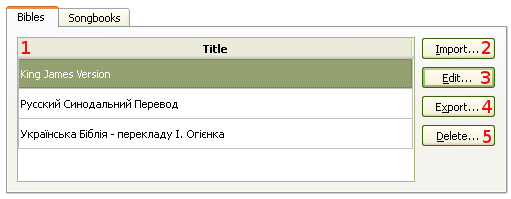
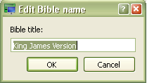
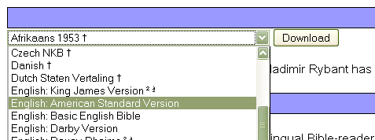
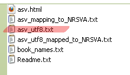

Справочник по СофтПроектору


4.1 Управление модулями Библий
Для управления модулями Библий:
При этом открывается диалоговое окно с опциями управления. Клавиши: Crtl+M
Софт Проектор позволяет вмещать столько Библий, сколько вы пожелаете.
В диалоговом окне можно импортировать, редактировать, экспортировать и удалять Библии.

Эта опция позволяет импортировать Библию из файла в формате Софт Проектора (*.sps), а также из сайта Unbound Bible (подробнее — ссылка внизу).
При нажатии на эту кнопку, открывается диалоговое окно, где можно изменить название Библии.

Экспортирование Библий из базы данных.
5.
Удаляется версия Библии, не нужная более для употребления. Если в базе данных осталась только одна Библия, ее удаление будет невозможно.
Импортирование Unbound Bibles
1. Идите на сайт: http://unbound.biola.edu/.
2. Щелкните на Downloads.
3. Выберите версию Библии для скачивания

4. Щелкните на кнопку "Download" и сохраните *.zip файл.
5. Locate downloaded zip archive file and extract its content.
6. From Manage Database dialog, click on "Import" button
7. Select a file that ends with "_utf8.txt". All other files, softProjector
will not be able to import.
